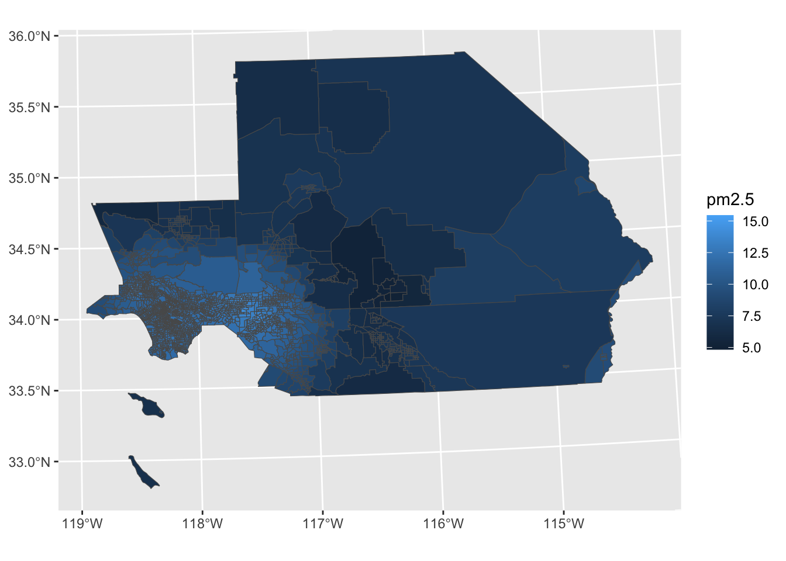
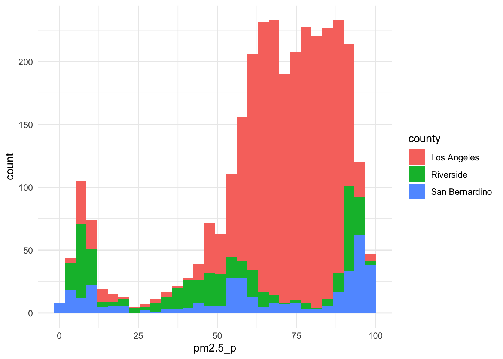
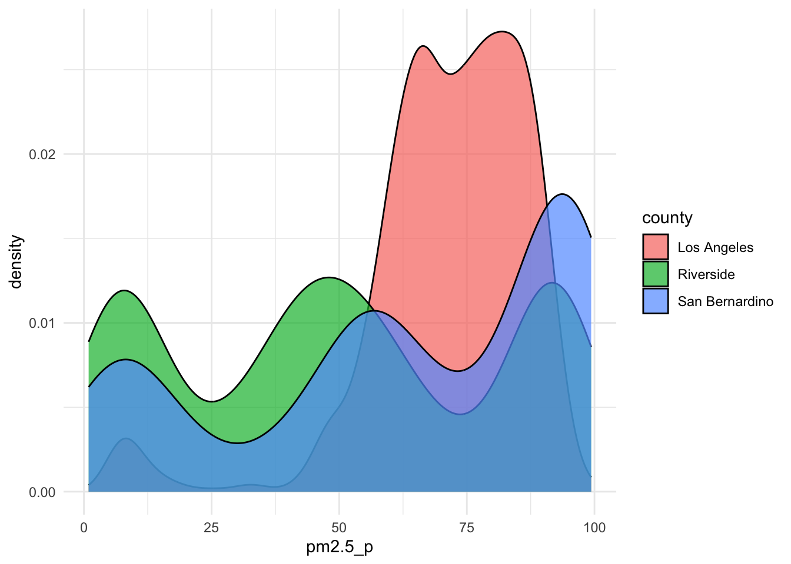
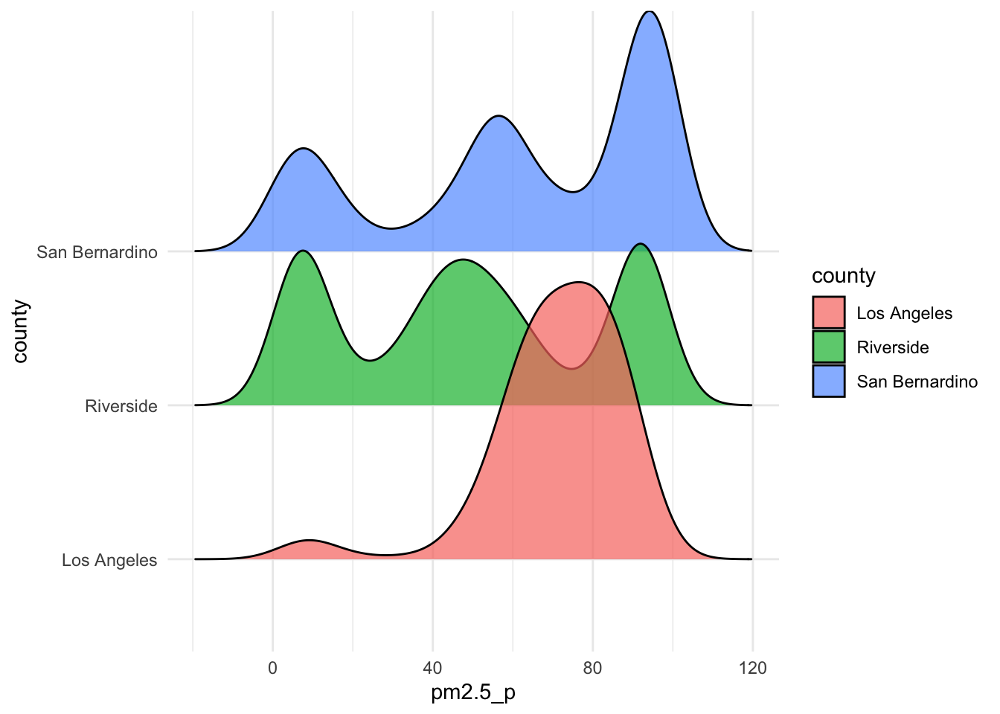
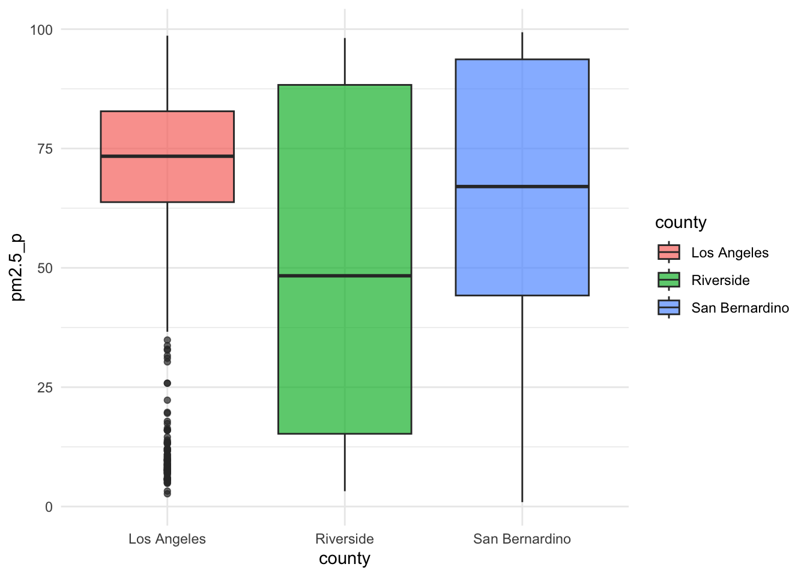
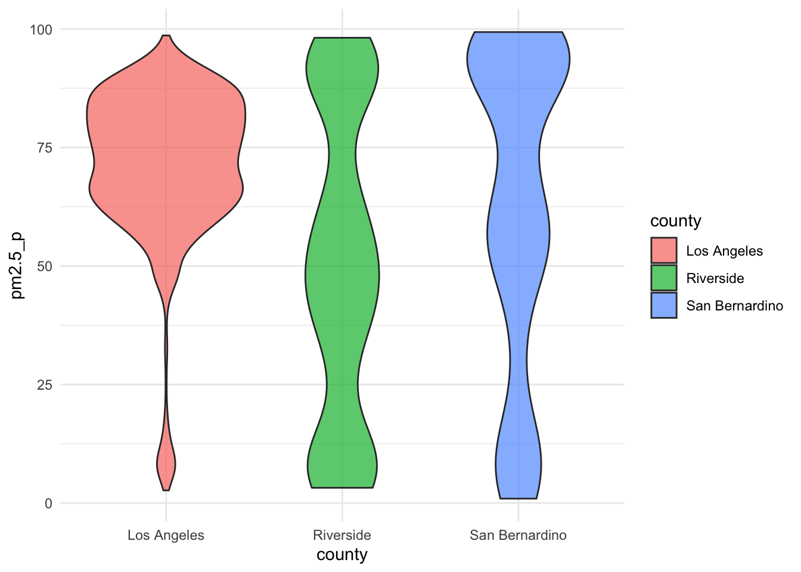

knitr::opts_chunk$set(echo = TRUE, warning = FALSE, message = FALSE)
library(tidyverse)
library(ggplot2)
library(janitor)
library(sf)
library(ggplot2)
library(ggridges)
library(patchwork)HW2-exploration.qmd
Overview
The purpose of this script is to explore CalEnviroscreen data to help answer the question: how do air quality, traffic, and health risks vary across space in three California counties that have high projected demand for hydrogen fuel in the near future?
ej <- st_read(here::here("data/calenviroscreen40shpf2021shp/CES4 Final Shapefile.shp"))
summary(ej)
# filter to counties with top 3 highest demand for hydrogen as a transportation fuel in 2030
ej_topcounties <- ej %>%
janitor::clean_names() %>%
filter(county %in% c("San Bernardino", "Riverside", "Los Angeles")) %>%
mutate_if(is.numeric, ~ ifelse(. < 0, NA, .)) %>%
select(tract:diesel_pm_p, traffic:traffic_p, poll_burd:geometry) %>%
rename(ci_score = c_iscore,
ci_score_p = c_iscore_p,
pm2.5 = pm2_5,
pm2.5_p = pm2_5_p)
summary(ej_topcounties)
names(ej_topcounties)
unique(ej_topcounties$county)
str(ej_topcounties)Exploratory Data Analysis
# spatial distribution
ggplot()+
geom_sf(data = ej_topcounties, aes(fill = pm2.5))
# histogram
ej_topcounties %>%
ggplot()+
geom_histogram(aes(x = pm2.5_p, fill = county))+
theme_minimal()
# density plot
ej_topcounties %>%
ggplot() +
geom_density(aes(x = pm2.5_p, fill = county), alpha = 0.7) +
theme_minimal()
# ridgeline plot
ej_topcounties %>%
ggplot() +
ggridges::geom_density_ridges(aes(x = pm2.5_p, y = county, fill = county), alpha = 0.7) +
theme_minimal()
# boxplot
ej_topcounties %>%
ggplot() +
geom_boxplot(aes(y = pm2.5_p, x = county, fill = county), alpha = 0.7) +
theme_minimal()
# violin plot
ej_topcounties %>%
ggplot() +
geom_violin(aes(y = pm2.5_p, x = county, fill = county), alpha = 0.7) +
theme_minimal()
Reflection
What have you learned about your data? Have any potentially interesting patterns emerged? (5-8 sentences)
In this script, I explored how Particular Matter 2.5 (PM 2.5) is distributed among census tracts within three California counties. From the exploratory analysis, I found the following:
- the amount of census tracts that are above the 50th percentile for PM 2.5 in Los Angeles was often over 10 times greater than the other two counties.
- the PM 2.5 percentiles for tracts in Riverside and San Bernardino county had similar distributions where there were a lot of tracts with low, medium, and high PM 2.5 percentiles.
- the vast majority of the PM 2.5 percentiles for tracts in Los Angeles county were above the 40th percentile with another small spike near the 10th percentile.
- Riverside county had the widest spread between the 1st and 4th quartile of the PM 2.5 data, then San Bernardino, then Los Angeles.
- Los Angeles county had the highest median value for PM 2.5 percentile, then San Bernardino, then Riverside.
In HW #1, you outlined some questions that you wanted to answer using these data. Have you made any strides towards answering those questions? If yes, how so? If no, what next steps do you need to take (e.g. I need to create X plot type, I still need to track down Y data, I need to restructure existing data so that you can visualize it in Z ways, etc.)? (8-12 sentences)
I mainly want to visualize how air quality, health, or traffic indicators related to green hydrogen production and use vary over space. To this end, I’ve visualized the spatial distribution of such parameters across tracts in the three California counties that my group project found will have the highest demand for hydrogen fuel in the transportation sector through exploratory plots.
I need to decide whether I want to answer this particular question for the EDS 240 assignment or shift towards research questions that are more directly related to my master’s project topic of green hydrogen. I plan to spend some time sketching out which figures I could create for the three audiences this week. Hopefully this will help me solidify what the most valuable use of time on this project will be and come up with a clear game plan to follow.
What challenges do you foresee encountering with your data? These can be data wrangling and / or visualization challenges. (4-6 sentences)
I am unsure whether I should incorporate spatial data from my group project on the locations/ amounts of future hydrogen production/ demand/ transport and the associated levelized costs. These parameters are a bit more complex and hard to communicate. Therefore, I’d need to put some thought into how to present concepts that aren’t familiar to the general public (e.g., electrolyzers, levelized cost, different hydrogen production pathways), which is not necessarily a bad thing. The group project data we have are also spread across multiple intermediate datasets. It would require a little bit of time to combine some datasets and document what some of the parameters mean.